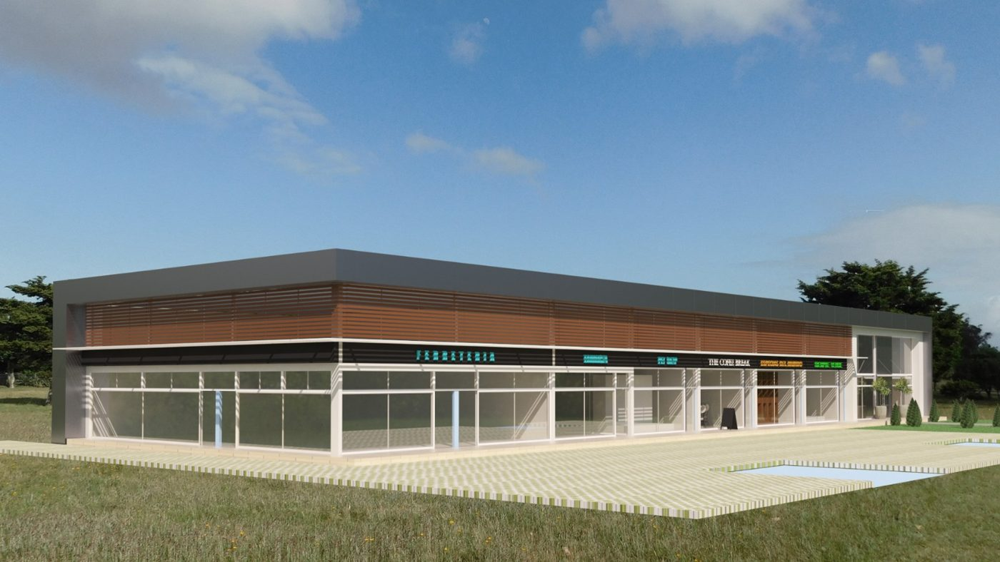

El proyecto en una página
Un edificio de locales de 250 m² en planta baja, con la imagen del render: techo plano con pretil, banda de brise de madera, faja para cartelería, frente vidriado continuo y un portal vidriado blanco en el extremo; una cenefa de chapa negra sube en la esquina del frente del terreno, recorre el dintel del frente y todo el lateral norte hasta la esquina del fondo. Toda la nave a la misma altura, con la línea de una casa moderna. Estructura de pórticos de acero sobre platea, y todo el cerramiento en paneles (Isopanel en muros, Isoroof en el techo). Arriba se elige cuántos locales, qué panel y si se entrega en cáscara o equipado: todo el visor se recalcula.

Render de referencia enviado por el cliente.
Los padrones según Catastro (cédulas del 11/11/2026)
| Padrón | Carpeta | Manzana | Área del predio | Edificado | Valor catastral 2025 | Nota |
|---|---|---|---|---|---|---|
| 10596 | 99 | 1744 | 1.000 m² | 0 | $ 1.324.703 | proyecto tipo |
| 10597 | 99 | 1744 | 1.000 m² | 0 | $ 1.396.696 | réplica etapa 2 |
| 10598 | 99 | 1744 | 1.050 m² | 0 | $ 1.466.536 | réplica etapa 3 · viene del padrón 9919 · DJCU 19/04/2024, ing. agrim. Fernando Pazos |
Régimen común, localidad catastral Punta del Este. Los tres tienen la declaración jurada de caracterización urbana (art. 178, Ley 17.296) vigente hasta 2029. Las cédulas no dan frente ni fondo: las medidas de 21 × 47,6 m de este visor siguen siendo estimadas a partir del gráfico catastral. Para fijarlas hace falta el plano de mensura o de fraccionamiento (el del padrón madre 9919) o una mensura nueva. El valor catastral (en pesos) es el que se usa para Contribución, Primaria y Patrimonio; no es valor de mercado.
Supuestos de normativa (a confirmar con la Intendencia de Maldonado)
Implantación en el padrón 10596
Terreno de 1.000 m² tomado como 21 × 47,6 m (proporción de la cédula catastral; se ajusta con la mensura). El edificio va recostado al sur con el frente de locales mirando al norte, sobre una plaza peatonal como la del render; el estacionamiento queda adelante, contra la avenida, y el fondo libre para servicio, carga y descarga, y tanques.
Los tres padrones
Cada padrón repite el mismo proyecto. Si más adelante se fusionan los tres, se puede hacer un solo frente continuo de 63 m y compartir estacionamiento y accesos (como se ve en el render).
Superficies
Planta arquitectónica
Grilla de pórticos cada 5 m (ejes 1 a 6) y luz libre de 10 m: adentro no hay columnas, así que los locales se pueden dividir en 2, 3, 4 o 5 sin tocar la estructura. Cada local tiene vidriera al norte, baño accesible y kitchenette al fondo, y una puerta de servicio y escape al pasaje sur.
Fachadas y corte
Alturas: piso terminado +0,15; vidriera hasta +3,00; faja de cartelería +3,00 a +3,50; visera blanca a +3,55; brise de +3,65 a +4,95; cenefa negra de +4,95 a +6,00, que es también el pretil. Toda la nave a la misma altura; el portal vidriado del extremo oeste va de piso a dintel. El techo cae hacia el sur (3 % engrafado o 7 % trapezoidal), a una canaleta interna escondida detrás del pretil.
Plano estructural
Predimensionado para presupuestar: lo verifica y firma el ingeniero con el cálculo final (viento de costa, suelo). Seis pórticos de alma llena, correas de techo según el panel elegido, largueros en muros y cruces de arriostramiento.
Fundación: platea, vigas de fundación y previsiones
Estructura de techo
Pórtico tipo (ejes 1 a 6)
Planilla de piezas (marcas del croquis)
Verificación: ¿era un divague?
Modelo de pórtico por rigidez (Python), cargas de viento UNIT 50-84 y combinaciones 1,2D+1,6L, 1,2D+1,6W y 0,9D+1,6W. Uso = solicitación / resistencia (100 % es el límite). La deriva con vidrieras conviene por debajo de h/300.
Suelo y fundación
Criterios
3D estructural por capas
🎬 Montaje animado (abajo, en la barra de etapas): la obra se arma pieza por pieza, con el manitou con operario subiendo pórticos y paneles, la tijera de 8 m con dos operarios y el día de obra en el cartel. Arriba: vistas armadas (como el render, desde la avenida, la plaza, el portal, aérea, planta, estructura, interior, fondo), tercera persona para caminar la obra y pantalla completa (también con la tecla F). El armado en 16 etapas, en el orden de obra. Se avanza con las flechitas ◀ ▶▶, con ▶ se reproduce solo, con la rueda del mouse sobre la barra de etapas (o Shift + rueda sobre el 3D) y con las flechas del teclado. Pasando el mouse por una pieza se ve qué es. Cambiá arriba la envolvente: cambian el color, el espesor, la pendiente y las correas.
Opciones de paneles
Todo el cerramiento en panel sándwich de Kingspan Bromyros. Muros lisos: Isopanel EPS (blanco) o panel liso PIR (grafito). Techo: engrafado Isodec (anda con 3 % de pendiente) o Isoroof 3G trapezoidal PIR grafito (pide 7 %). Precios de material publicados en octubre y noviembre de 2026; falta confirmar si incluyen IVA y cotizar con Bromyros por volumen.
Rubrado del proyecto
Desde la platea hasta la habilitación. Cantidades calculadas sobre los planos de este visor; costo directo con mano de obra, y precio de venta SBU (costo × 1,1 × 1,25). Cambiá locales, envolvente o entrega arriba y se recalcula.
Fundación según el estudio de suelos
Gestión, permisos y habilitaciones
Plazo estimado
Costos de obra y subcontratos
Todo está calculado como si se subcontratara. Tildá Lo hacemos nosotros en un rubro y se compara con el costo de hacerlo con cuadrilla propia: materiales + mano de obra propia + alquiler de manitou con operario y tijeras. El precio al cliente no cambia; lo que cambia es el costo real y la ganancia de SBU. Si lo hace SBU, se paga el material y la mano de obra propia (≈ 75 % de lo que cobra un subcontratista por la misma tarea, porque no se pagan sus gastos ni su ganancia).
La tijera de 8 m de altura de trabajo (plataforma a 6 m) alcanza: el borde del techo está a +4,3/4,6 y la cenefa termina a +6,00. Una de 6 m de trabajo (plataforma 4 m) no llega a la cenefa. El manitou se usa con su operario.
Ojo con hacerlo propio
- La mano de obra propia va con BPS de obra (aporte unificado sobre jornales) y seguro del BSE: está incluida en el costo de la cuadrilla (≈ USD 392 por día, 1 oficial especializado, 1 oficial y 2 peones con aportes).
- Sanitaria y eléctrica necesitan firma de técnico habilitado para OSE, UTE y la habilitación de Bomberos: si las hace SBU, igual hay que contratar la firma (instalador autorizado UTE, sanitario para OSE).
- Montaje de paneles: con cuadrilla propia se alquila el manitou con operario (sube los paquetes al techo y los paneles largos de muro) y tijeras de 8 m; Kingspan Bromyros da asistencia técnica de montaje. El precio de subcontrato (USD 24/m² techo, 28/m² muro) ya incluye los equipos del colocador.
- Lo que se hace propio saca días de la cuadrilla de otras obras: mirá la columna de días.
Proveedores y respuestas
Por rubro: cargás proveedores con su WhatsApp o mail, mandás el pedido a todos con un mensaje ya armado (con el link al PDF), y vas cargando las respuestas. La tabla las ordena por precio comparable (con flete y aportes BPS) contra el estimado del rubrado. Queda guardado en este navegador; se exporta para pasarlo a otra compu.
Cómo se dejan previstos los locales
Lo que va bajo la platea se decide antes de hormigonar y después no se puede cambiar. Por eso la clave es dejar previsiones universales: un punto sanitario en el fondo de cada módulo de 5 m. Así sirve para 2, 3, 4 o 5 locales y para el día que se junten o se separen dos.
Qué queda hecho y qué completa cada inquilino
Rentabilidad: cuántos locales conviene
Más locales chicos se alquilan más caros por m², pero cuestan más (divisorios, baños, medidores, habilitaciones) y tienen más rotación. La tabla compara 2 a 5 locales con los mismos supuestos; los valores se cambian acá abajo.
Referencias de alquiler en la zona
Auditoría de costos y estudio de mercado
Revisión del rubrado contra precios de referencia y avisos publicados (noviembre 2026), lo que falta cotizar y cuánto vale el edificio terminado. Se recalcula con la cantidad de locales, la envolvente y la entrega elegidas arriba.